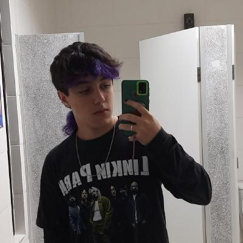

(Acessar perfil)
Tenho 18 anos, moro em Barueri, SP e quero me tornar um desenvolvedor back-end. Além de programar, também gosto muito de tocar violão e escutar rock nacional (viva charlie brown!!).
Atualmente estou cursando Análise e Desenvolvimento de Sistemas na Fatec Carapicuíba, iniciado em fev/2026 e com previsão de conclusão para dez/2028.
Me tornar um desenvolvedor back-end, que me possibilite trabalhar de casa e passar tempo com minha família ao mesmo tempo que faço o que amo.